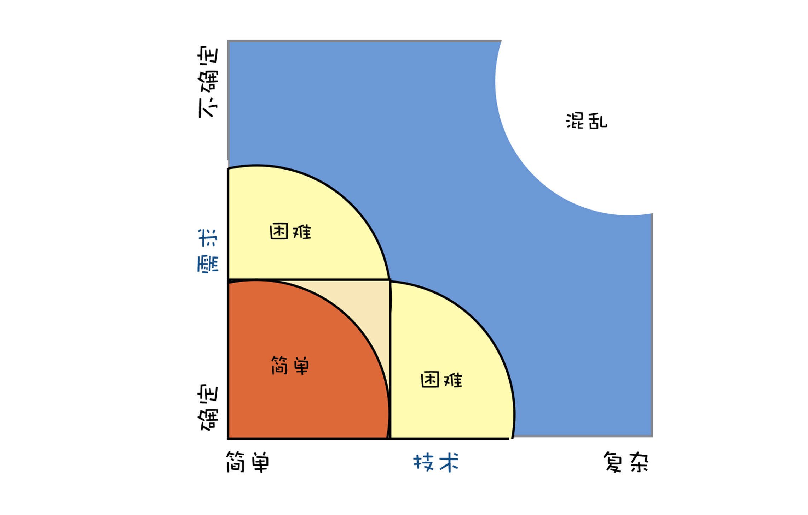
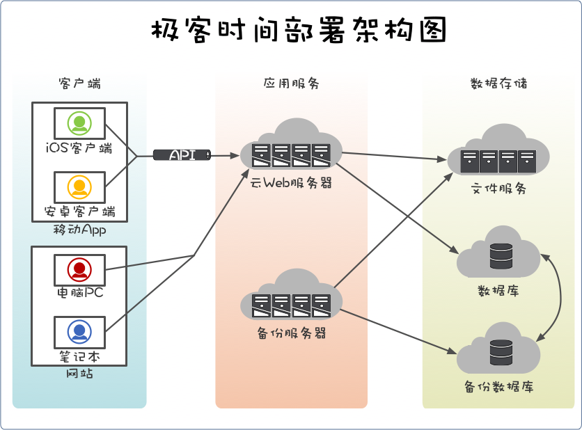
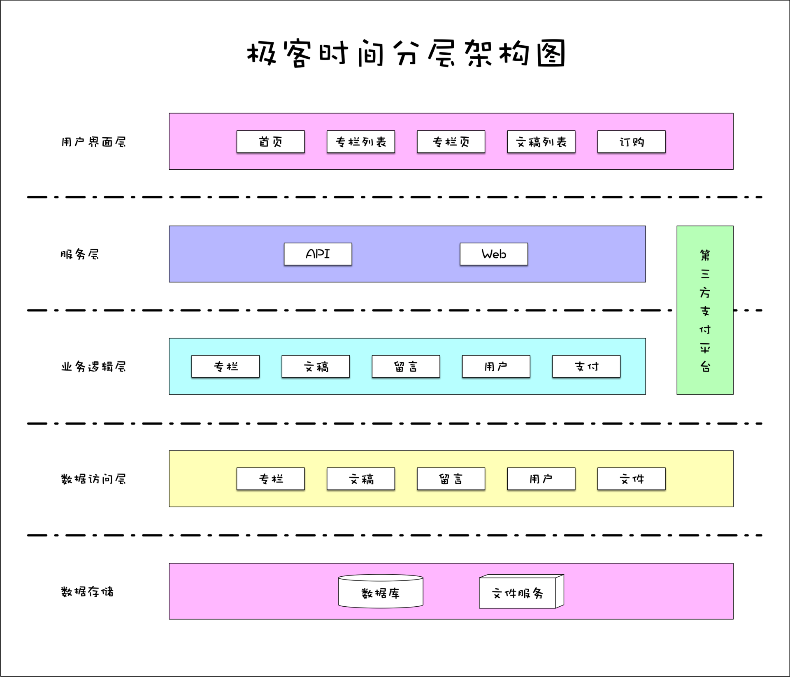

- 00 开篇词 你为什么应该学好软件工程？.md.html
- 01 到底应该怎样理解软件工程？.md.html
- 02 工程思维：把每件事都当作一个项目来推进.md.html
- 03 瀑布模型：像工厂流水线一样把软件开发分层化.md.html
- 04 瀑布模型之外，还有哪些开发模型？.md.html
- 05 敏捷开发到底是想解决什么问题？.md.html
- 06 大厂都在用哪些敏捷方法？（上）.md.html
- 07 大厂都在用哪些敏捷方法？（下）.md.html
- 08 怎样平衡软件质量与时间成本范围的关系？.md.html
- 09 为什么软件工程项目普遍不重视可行性分析？.md.html
- 10 如果你想技术转管理，先来试试管好一个项目.md.html
- 11 项目计划：代码未动，计划先行.md.html
- 12 流程和规范：红绿灯不是约束，而是用来提高效率.md.html
- 13 白天开会，加班写代码的节奏怎么破？.md.html
- 14 项目管理工具：一切管理问题，都应思考能否通过工具解决.md.html
- 15 风险管理：不能盲目乐观，凡事都应该有B计划.md.html
- 16 怎样才能写好项目文档？.md.html
- 17 需求分析到底要分析什么？怎么分析？.md.html
- 18 原型设计：如何用最小的代价完成产品特性？.md.html
- 19 作为程序员，你应该有产品意识.md.html
- 20 如何应对让人头疼的需求变更问题？.md.html
- 21 架构设计：普通程序员也能实现复杂系统？.md.html
- 22 如何为项目做好技术选型？.md.html
- 23 架构师：不想当架构师的程序员不是好程序员.md.html
- 24 技术债务：是继续修修补补凑合着用，还是推翻重来？.md.html
- 25 有哪些方法可以提高开发效率？.md.html
- 26 持续交付：如何做到随时发布新版本到生产环境？.md.html
- 27 软件工程师的核心竞争力是什么？（上）.md.html
- 28 软件工程师的核心竞争力是什么？（下）.md.html
- 29 自动化测试：如何把Bug杀死在摇篮里？.md.html
- 30 用好源代码管理工具，让你的协作更高效.md.html
- 31 软件测试要为产品质量负责吗？.md.html
- 32 软件测试：什么样的公司需要专职测试？.md.html
- 33 测试工具：为什么不应该通过QQ微信邮件报Bug？.md.html
- 34 账号密码泄露成灾，应该怎样预防？.md.html
- 35 版本发布：软件上线只是新的开始.md.html
- 36 DevOps工程师到底要做什么事情？.md.html
- 37 遇到线上故障，你和高手的差距在哪里？.md.html
- 38 日志管理：如何借助工具快速发现和定位产品问题 ？.md.html
- 39 项目总结：做好项目复盘，把经验变成能力.md.html
- 40 最佳实践：小团队如何应用软件工程？.md.html
- 41 为什么程序员的业余项目大多都死了？.md.html
- 42 反面案例：盘点那些失败的软件项目.md.html
- 43 以VS Code为例，看大型开源项目是如何应用软件工程的？.md.html
- 44 微软、谷歌、阿里巴巴等大厂是怎样应用软件工程的？.md.html
- 45 从软件工程的角度看微服务、云计算、人工智能这些新技术.md.html
- 一问一答第1期 30个软件开发常见问题解决策略.md.html
- 一问一答第2期 30个软件开发常见问题解决策略.md.html
- 一问一答第3期 18个软件开发常见问题解决策略.md.html
- 一问一答第4期 14个软件开发常见问题解决策略.md.html
- 一问一答第5期 22个软件开发常见问题解决策略.md.html
- 学习攻略 怎样学好软件工程？.md.html
- 特别放送 从软件工程的角度解读任正非的新年公开信.md.html
- 结束语 万事皆项目，软件工程无处不在.md.html
- 捐赠
21 架构设计：普通程序员也能实现复杂系统？
你好，我是宝玉，我们已经正式进入到“系统设计”这个主题模块，今天我们先来聊一聊“架构设计”。
早些年，软件很简单的时候，不需要需求分析和架构设计，直接采用边写边改（Code And Fix）模型，也能做出来。后来软件复杂了，就对程序员要求特别高了，所以早些年的软件开发，都是个人英雄主义盛行。比如张小龙一个人完成了 Foxmail，求伯君完成 WPS，王江民写 KV 杀毒软件……
不过，那时候对于普通程序员来说，去写这样复杂的系统，也是可望而不可及的。再后来软件产品越发复杂后，靠高手的开发模式也不可行了。
软件需求越来越多，而高手又是稀缺资源，所以要解决的一个问题就是：让普通程序员也能参与其中，一起实现复杂系统，而不必依赖于很多精英。
为什么软件项目需要架构设计？
要想实现让普通程序员也能实现复杂的软件系统，我们先要看看什么样的是复杂的软件项目。复杂的软件项目，通常有两个特点：需求不确定和技术复杂。

关于需求不确定，我在前面的文章已经讲了很多，我们主要来看看技术的复杂性。技术的复杂性，主要体现在四个方面。
- 需求让技术变复杂
如果需求本身很复杂，那么对应的技术也会很复杂。比如说你做一个个人博客网站，和做一个淘宝这样的网站，技术复杂度是有天壤之别的。
要响应需求的变化，也会让技术变复杂。对于明确的需求，相对来说技术实现是容易的。但是，随着需求地不断变化，新的需求可能会破坏原有的代码架构，导致系统越来越臃肿复杂，维护也越来越难。
- 人员会让技术变复杂
现在软件开发通常不是一个人，而是一个团队。团队成员水平不一样，擅长的技术方向也不一样，让这一群人有效地协作也是很大的考验，简单的技术问题也会变成复杂的技术问题。
- 技术本身也是复杂的
现在软件项目中选择编程语言、框架、技术组件、数据库等技术或工具，还可能需要应用像微服务、大数据、人工智能技术，这些技术本身就是复杂的，普通人都需要通过一定的学习才能掌握。
- 要让软件稳定运行是复杂的
软件在开发完成后，要发布运行，但运行时也充满了各种不确定性。比如说明星发布八卦可能会导致微博宕机；阿里云宕机导致很多基于阿里云的系统也跟着一起无法提供服务。
因为技术的这些复杂性，会导致软件开发变得很复杂，开发成本很高。而架构设计恰恰可以在这些方面很好地解决技术复杂的问题。
首先，架构设计可以降低满足需求和需求变化的开发成本。
对于复杂的需求，架构设计通过对系统抽象和分解，把复杂系统拆分成若干简单的子系统。就像淘宝这样复杂的网站，最终拆分成一个个小的微服务后，单个微服务开发的难度，其实和个人博客网站的难度已经差不太多了，普通程序员都可以完成，降低了人力成本。
对于需求的变化，已经有一些成熟的架构实践，比如说像分层架构这样把 UI 界面和业务逻辑分离，可以让 UI 上的改动，不会影响业务逻辑的代码；像 Wordpress 这样基于插件和定制化的设计，可以满足绝大部分内容类网站的需求，降低了时间成本。
其次，架构设计可以帮助组织人员一起高效协作。
通过对系统抽象，再拆分，可以把复杂的系统分拆。分拆后，开发人员可以各自独立完成功能模块，最后通过约定好的接口协议集成。
比如说前后端分拆后，有的开发人员就负责前端 UI 相关的开发，有的开发人员就负责后端服务的开发。根据团队规模还可以进一步细分，比如说前端可以有的程序员负责 iOS，有的程序员负责网站，这样最终各个开发小组规模都不大，既能有效协作，又能各自保证战斗力。
再次，架构设计可以帮助组织好各种技术。
架构设计可以用合适的编程语言和协议，把框架、技术组件、数据库等技术或者工具有效的组织起来，一起实现需求目标。
比如说经典的分层架构，UI 层通过选择合适的前端框架，例如 React/Vue 实现复杂的界面逻辑，服务层利用 Web 框架提供稳定的网络服务，数据访问层通过数据库接口读写数据库，数据库则负责记录数据结果。
最后，架构设计可以保障服务稳定运行。
现在有很多成熟的架构设计方案，可以保障服务的稳定运行。比如说分布式的架构，可以把高访问量分摊到不同的服务器，这样即使流量很大，分流到单台服务器的压力并不大；还有像异地多活这样的架构方案可以保证即使一个机房宕机，还可以继续提供服务。
其实，满足需求和需求变化、满足软件稳定运行是架构的目标，对人员和技术的组织是手段。架构设计，就是要控制这些技术不确定问题。
我们也可以说：架构设计，就是通过组织人员和技术，低成本满足需求以及需求的变化，保障软件稳定高效运行。
什么是架构设计？
你现在已经知道了架构设计的价值，那么究竟什么是架构设计呢？要说清楚这点，我们可以分别从目标和方法两个角度来看。
最开始我以为架构设计的目标是满足业务需求，保证软件能正常工作。后来发现这其实只是最基本的要求，因为很多糟糕的架构设计，也能满足业务需求，让系统正常运行。
比如说有人把一个小网站拆分成几十个微服务运行，也是一种架构设计，但是这样，无论是开发成本还是运行成本都很高。
所以架构设计的目标，是用最小的人力成本来满足需求的开发和响应需求的变化，用最小的运行成本来保障软件的运行。
架构设计，已经有很多成熟的方法。比如说：
使用微服务这样的架构，把复杂系统拆分成一系列小的服务，服务再拆成功能模块，让人员更好地分工协作；
通过前后端分离，让程序员更专注于某个知识领域，降低开发难度；
用分层设计来隔离业务逻辑，减少需求变更带来的影响。
这些架构设计的方法，其实都是基于工程领域分而治之的策略，本质上就是将系统分拆，将人员分拆。但是光拆还不够，拆完了还得能拼回来，所以你要清楚架构设计的“道”。
架构设计的道，就是组织人员和技术把系统和团队拆分，并安排好切分后的排列关系，让拆分后的部分能通过约定好的协议相互通信，共同实现最终的结果。
这很像乐高玩具，将一个个小的模块通过接口拼接在一起，搭成一个大的模型。只不过在程序中，换成了其他形式的接口，比如前后端通过 REST 这种协议交互，内部组件之间通过方法调用；在软件项目中，人员从大的开发团队被分拆成小组后，小组之间通过流程规范协作。
如何做好架构设计？
架构设计，总给人感觉技术很高深。所以很多新手一提到架构设计，就有些畏足不前，不知道该从什么地方下手。
架构设计要做好，确实不是一个容易的事，需要大量的经验积累。但业界已经有了很多成熟的架构设计模式，我们不需要闭门造车，可以在理解清楚业务需求后，找到相近的架构设计，然后基于成熟的架构设计方案，进行改造，变成适合自己业务需求的架构。
接下来我就以极客时间的服务端为例，来简要说明一下如何做架构设计。假设现在你要设计第一版本极客时间服务端的架构，只有专栏课程一个核心功能，目标用户访问量是日 PV 上万，峰值每秒 10 个左右访问，对稳定性要求高。那么，你该如何做呢？
第一步：分析需求
架构设计，最基本的就是要能满足业务需求，所以搞清楚需求是至关重要一步。而产品需求，只有功能的描述，界面的交互，还需要进一步进行抽象。
一个常用的分析方法就是分析用例，也就是了解主要用户角色和其使用的场景。
我们如果把极客时间的专栏课程功能画成用例图，大概如下所示：

从图上可以看出，有四种角色：编辑、专栏作者、未付费用户和付费用户。每个角色有其独特的功能，有些角色之间还有通用的功能。还需要注意的一点是，每个用户，都可能会通过不同的设备终端来使用这些功能：网站、安卓手机、iPhone 手机。
第二步：选择相似的成熟的架构设计方案
在了解清楚需求后，就可以从业界成熟的架构设计模式中选取一个或几个。当然，具体选择哪些架构设计模式，需要你根据平时的学习积累来做判断。到这个阶段，同时还要考虑使用的语言和框架。
极客时间服务端，主要包含两部分内容，一个是给手机客户端提供的 API 服务，还有就是网站需要的 Web 服务。第一个版本其实访问量并不大，我们完全可以把 API 服务和网站服务合并成一个服务。另外专栏的内容，文字内容涉及数据库的存储，同时音频涉及文件存储。
这其实是一个典型的网站架构，可以基于传统的分层架构来实现。分层架构按照水平方向将系统拆分成几个层，每层都有清晰的角色和分工，不需要关心其他层的细节。

图片来源：软件架构入门
在选择好架构方案后，还需要考虑选择什么语言和开发框架。这部分选择需要根据团队情况和项目情况来综合评定。
比如说团队以 PHP 程序员为主，就没必要贸然选择 Java 作为开发语言；如果以 js 程序员为主，就可以考虑使用 Nodejs。因为这样的选择，能让团队不需要太多的学习成本。
第三步：自顶向下层层细化
其实我们专栏从工程思维开始，到后面提到的写文档、原型设计，都是建议能从整体到局部，这样更具有大局观，不容易过早陷入技术细节中。架构设计也是如此，好的实践是自顶向下层层细化。
在选择好成熟的架构设计方案后，可以基于方案，层层细化，逐步完善、调整和优化。
- 部署架构
这类分层架构网站，部署也比较简单。为了减少运维成本，我们可以基于云服务设计部署架构，选购云数据库和文件存储，选购虚拟机作为网站服务器。
那么部署架构可以比较简单，如下图所示：

基本上这个架构就可以基本满足运行需求。但要做到稳定性高还不够，万一数据库挂了或者网站服务器挂了，都可能会让服务中断一段时间。
所以我们可以增加一台异地网站服务器和一个异地云数据库实例作为备份，这样一旦网站宕机或者数据库有问题，可以切换到备机，马上恢复访问。所以调整后架构如下：

这样我们就很好的满足了对运行稳定性的要求。
- 分层和分模块
按照分层架构的思路，我们可以把系统分成四层。
用户界面层：用户界面，负责展现功能以及和用户交互。
服务层：API 服务和 Web 网站服务。
业务逻辑层：实现业务逻辑，比如说如何读取用户订阅的专栏列表。
数据访问层：对数据库的访问。
数据存储：用数据库保存数据，文件库保存音频文件。
分层分好后，还需要基于前面的用例图，把相同的功能抽象出来，设计成模块，比如说留言相关的都放到留言的模块，文稿相关的都放到文稿模块。
最终的设计图大概会是这个样子：

在分层和分模块之后，就可以很好的对人员进行分工，可以把具体工作细分到某一层的某个模块。
- API 设计、数据库设计、模块的设计
在分层和分模块的设计完成后，就可以对 API 进行设计，对数据库进行表设计。这部分就不展开细讲了。
还有一些模块的设计，还可以让负责开发该模块的程序员参与一起设计，这样一方面让他提前熟悉设计，另一方面也可以让他锻炼设计能力，提高参与积极性。
第四步：验证和优化架构设计方案
在技术方案完成后，还需要去验证方案是不是满足设计的目标，能否满足需求和未来需求的变化，能否保障软件有效地运行。
方案的验证是贯穿整个设计始终的，一个完整的架构设计方案，需要有多次的评审会议，充分收集各方面的反馈，反复修改后才能最终确定下来。
在第二、三步，可能会生成几个技术方案，这时候就需要做出一些技术上的决策。决策时，需要考虑清楚方案是否能低成本的完成软件需求的开发，同时能低成本的运行和维护该软件。还有你要考虑架构预期要满足多长时间的业务增长，比如说半年还是一年还是三年。
在架构设计确定后，就可以基于架构设计的结果大家一起分工协作了。架构设计并不是确定后就不修改了，在实际开发的过程中，还需要根据情况对架构进行优化和调整。
比如说实际运行的时候，发现 API 访问量很大，会拖慢网站访问速度，那我们就可以考虑把 API 和网站分拆开来，各自做成单独的服务，避免相互干扰。
推荐学习材料
O’Reilly 出版过一本免费的Software Architecture Patterns， 介绍了五种最常见的软件架构。阮一峰老师有在软件架构入门中对其各种模式进行介绍。
还有像架构师之路这样的开源电子书，对于服务端架构中常用的设计，有很不错的总结。图解：从单个服务器扩展到百万用户的系统这篇文章对单服务器到大用户系统的演变也有通俗易懂的总结。以“前浪微博”场景为例，谈谈架构设计流程四步曲这篇文章也介绍了一种非常好的架构设计方法。
最后，推荐一本书：架构整洁之道。我觉得是架构设计书籍中写的最透彻最浅显易懂的一本。
总结
今天，我们一起学习了软件工程中一个非常重要的知识，那就是架构设计。
架构设计，是为了控制软件项目中技术复杂的问题。架构设计，通过组织人员和技术，低成本满足需求以及需求的变化，保障软件稳定高效运行。
架构设计可以通过四个基本步骤：
第一步：分析需求；
第二步：选择相似的成熟的架构设计方案；
第三步：自顶向下层层细化；
第四步：验证和优化架构设计方案。
通过良好的架构设计，可以有效降低开发难度和成本，让普通程序员也能实现复杂系统。
© 2019 - 2023 Liangliang Lee. Powered by gin and hexo-theme-book.